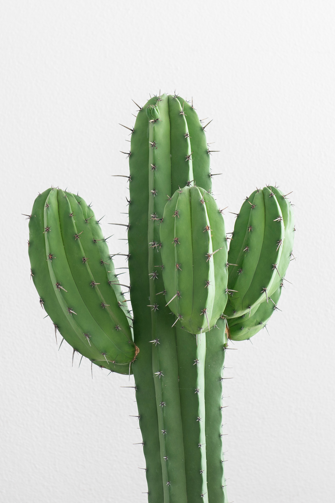

The cactus is a type of plant called a succulent. This means that it can store water in its stems, roots, and leaves. This tree is a very unique type of tree
this is because even if it doesn’t rain for a long time, the cactus still has water saved up to help it grow, this helps the cactus survive in the Desert and it is found vastly throught the Desert.
The spikes on the Cactus also helps it to fend off against animal attacks as it acts like a sharp object.
